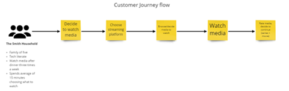
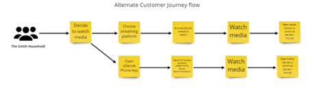
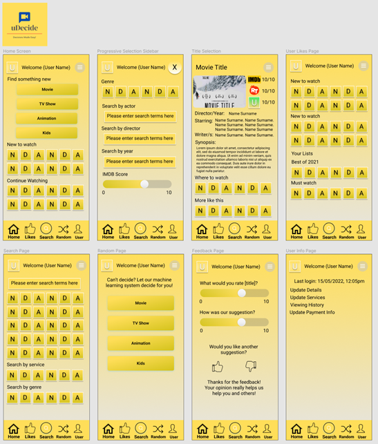
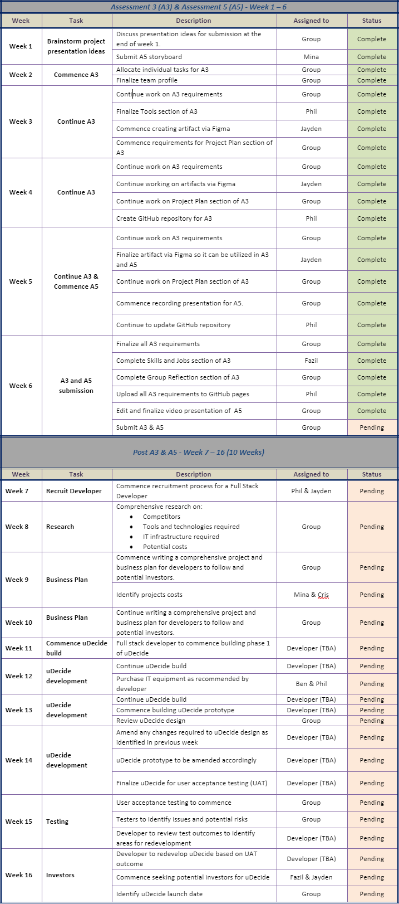

IT Project
Overview
Topic
uDecide will be an extraordinary mobile and web-based application for sorting through entertainment from all streaming services the
user is subscribed to so that they can easily find something worthwhile to watch. The user will be able to interact with the site on
both their mobile devices and browser so that they are not restricted in accessing uDecide whatever platform they prefer to use.
There will also be features for customizing what entertainment is shown on your browser or mobile device through manual filters that
cover an array of different sections and categories. The user interface will aim to give essential data on the surface to minimize
the need for constantly clicking through different pages and taking up more time than should be necessary for finding a movie or
show to watch. Every movie and show on uDecide will also have an extremely useful feature which uses data from the largest rating
and review websites like IMDB and Rotten Tomatoes to provide the user with an obvious way to tell whether their chosen entertainment
is considered good or bad by the majority of watchers, which reduces the risk of the user having to sit through a movie and only find
out it has bad writing, plot or acting after they finish watching it.
Inside uDecide's catalogue will be movies and shows from every major streaming service in Australia which each have multiple points
of information. One of the greatest ways uDecide helps you pick what you want to watch is through the people who have reviewed and
or rated your chosen entertainment through IMDB and Rotten Tomatoes API's. There is also however greater information for quickly
deciding on whether a movie or show is worth your time, such as likes and dislikes from fellow uDecide members and trailers that
can be watched in app. uDecide also solves a big problem that comes with entertainment listings for kids. Multiple sections will be
separated by age range which is a fantastic way to not just make the kids section usable for teenagers but also keep it friendly for
younger kids who are not at an age to be left alone with the teenage content usually found in general kid's sections.
Motivation
The motivation behind uDecide stems from multiple problems with today's streaming service landscape. With such a large number of
streaming services out there it is a frustrating time waster to have to keep switching between different applications with vastly
different UI's, categories, filters, and search options. There is also little reliable information given about a certain movie or
show on a streaming services platform which creates the need to find valuable information such as filters and reviews yourself. This
tedious process makes the time it takes to find something you want to watch expand well beyond what is appropriate and starts
ruining the experience a streaming service is meant to give you. This tedious process is the motivation behind uDecide, the annoying
waste of time and effort just to find a simple movie or show is gone and now you have all your entertainment in one place with a way
to search, filter and view ratings that trumps any streaming services ability to do so.
Landscape
Similar products such as 'Flickmetrix' are available let you browse all movies and help filter what your preferred movie might
be, 'Rotten Tomatoes' is another entertainment scoring system that represents the percentage of critic reviews on a certain tv
show or movie. Streaming services such as netflix offer a similar method of recommendation to a user where there is a user
recommended rating on the movies home page. The products mentioned above all compete in the entertainment rating industry in
their own unique ways however what remains special about Udecide is the integration of many different streaming services and
entertainment rating systems such as IMDb, Netflix and Rotten Tomatoes which is used in an application/website form to give a
very detailed recommendation of user's entertainment preferences.
Description
Aims
The aim of this project is to provide meaningful entertainment for viewers who use the TV guide of watching TV shows or movies through recommendations
from uDecide. uDecide provides users with the information they need on any streaming services catalogue to decide on what they want to watch in a timely
manner. Viewers can use uDecide with any Australian streaming service. uDecide's goal is to give viewers a high-quality TV streaming experience, which
will be realized through easy access to information not found on streaming services. uDecide will guide the optimal service through various manual
filters, categories and reviews recommended by other sites and analyze the audiovisual data of past they have seen.
For uDecide's rating and reviews section to function there will need to be multiple API's for IMDB, Rotten Tomatoes and possibly others that request the
required data to be displayed on the front end of the site. The API usage needs to be determined to limit the amount of requests to the bare minimum so
that there is no cost of requesting ratings and review data. Due to the ratings and reviews coming from multiple API's there may be unequal usage to fit
what we can use from each separate API.
Plans and Progress
Step 1: Problem Framing
Our problem begins with a predicament that most people will have some experience with when it comes to the consumption of
streaming media. There are currently a multitude of streaming platforms available with the average user having access to 8.8
different streaming services (Anderson, 2022) which has the benefit of providing an endless amount of content to watch.
However, this creates the problem of making the decision to watch something take substantially longer. “A study by Ericsson
Consumer Lab found that the average US user spends approximately 23 minutes a day trying to find something to watch”
(Alexander, 2016). While current user bases vary in age from platform to platform, with the average user spending the
equivalent of an episode of a tv show on just deciding what to watch, what can we provide to users to help alleviate this issue?
Step 2: Draft Questions and User Interview
In order to narrow down the problem to a specific issue that can be developed into some form of a product to help relieve this
issue, the best way forward would be to first interview a random group of individuals who use streaming services to identify
common trends and pain points. Some basic questions will be used to outline how users utilize these services and how they feel
about the amount of time spent searching for new media to watch. From these responses, we can analyze common problems and
themes and narrow down the problem to be researched and a solution developed. The following questions will be asked to gauge
how users feel about streaming services and any potentially outline any common negative trends.
| Question |
Purpose |
| 1. How do you feel about choosing new media to watch on streaming platforms? |
Generic question to establish broad feelings about services from the users. |
| 2. How do you currently decide on what to watch? |
The purpose of this question is to establish common methods of deciding what new material to watch. |
| 2a. Does this leave you feeling time could be better spent? |
Specifically asking how users feel about the broader issue to analyze the level of severity. |
| 3. If you were to reduce the amount of time searching for new media to watch, how would you go about doing that? |
Asking users what they'd be willing to do to alleviate the issue. Comparing this with the previous question helps
with judging the severity of the issue.
|
| 4. What are the most important considerations for you when choosing new media? |
Helps understand the main criteria for selecting new media, trends can be identified and incorporated in designing
stage.
|
| 4a. What would you consider to be a successful choice? |
It helps establish what success looks like in the eyes of the user. Can again identify trends and incorporate in
designing stage.
|
| 5. Would you like to choose media in a different way? If so, how would you expect to do that? |
Proposing an alternative to the user's original idea can help identify additional or alternative themes to be
further developed on.
|
Step 3: Outline a Common User
The most common user group demographic for uDecide involves those from Generation Y (millennials aged 25-42 years) and
Generation Z (aged 7-25 years). According to statistics relating to similar competitors, most Netflix's users aged 18-54 years
old were (Stroll, 2022). Another similar competitor, Prime Video, found that the younger demographic seemed to be their most
frequent viewers on the Amazon giant's streaming platform (statista 2022). There is a common trend among the younger generation
being involved with streaming services online due to their close interaction with modern technology as well as their
familiarity with it. Generation Z are avid music goers and gamers with plenty of time on their hands, additionally being known
as the generation that is ever present on social media and the internet in general. Similarly, Generation Y are also savvy with
technology and heavily rely on communication through social media platforms. Most modern-day jobs also use the most up to date
technology forcing Generation Y to adapt to them. The characteristics of Generation Z and Y fit in well with the demographic
the uDecide wants to target. uDecide is the latest technological upgrade to streaming services serving the platform on new
modern technological devices such as smart TVs and touchscreen devices. The younger demographic has a large consumption of
entertainment daily, eventually ending up at a point of not knowing what movie or tv show they want to watch. This is the
problem the uDecide provides a solution to. With the frustration of not knowing what to watch anymore, the younger demographic
(gen z and y) can rely on uDecide to help them choose their source of entertainment with the help of a highly personalized
rating system tailored to the individual users.
Step 4: Research the Problem
User problems
uDecide needs to solve the problems that users have with streaming services regarding search effectiveness and time it takes to
search to be an effective product.
The survey results of the PwC Consumer Intelligence Series 2021 video survey show that the number three reason for
unsubscribing from a streaming service was due to the user having trouble finding what to watch. There are multiple problems
that can be addressed to challenge this issue users have and the first of these problems is how little information most
streaming services provide about their movies and shows that disable the user's ability to make more easily informed decisions
on what they want to watch. An over-arching time consumption problem also arises with how long it takes to sift through the
large catalogues of streaming services without a good method of getting to your ideal movies and shows quickly.
The first problems to address in relation to the user's difficulty in finding what to watch are what content the user views,
whether that content appeals to the user and how long the user can search through irrelevant content before becoming
frustrated. To minimize the difficulty a user experiences when searching through movies and shows a feature such as a varied
filter section that considers all of a user's desired preferences would be most useful. This will aid the user's problem of not
being able to find what to watch by giving them the ability to only view movies that fit their desired range of movie.
While manual filters can aid in a user's search through streaming service catalogue there is still a large problem with how
long it takes to find something to watch. Sometimes manual filters can make it harder to search for content as having too many
options can quickly become overwhelming. 31% of users value good and accurate recommendations and 29% of users are frustrated
by the large array of entertainment choices (PwC n.d). These statistics show that the best solution for gathering an audience
for uDecide is through a recommendation system that supplies the user with a movie or show without any effort on their part.
This solution will attract primarily the overlapping survey users who value recommendations and are frustrated by too many
options but can also attract users who only have one of these problems allowing over a third of streaming service users to be a
great target audience for this feature.
Competitors
The solutions to these problems must not only effectively solve the problem but also go beyond competitor solutions and improve
or exceed what they have already achieved.
After researching possible competitors to our main idea, a few were identified. Keeping the constraints in mind, the top three
competitors to the project idea are as follows: On TV Tonight Pty Ltd.'s TV Guide Australia's phone app for iOS and Android,
and the two website-based guides CompareTV and JustWatch Australia.
TV Guide Australia is the closest thing to a traditional format of browsing for upcoming media content through the broadcasted
Australian TV mediums (both free and paid TV). While not necessarily containing content from streaming platforms, it is still
beneficial to analyze and compare to this as it implements some concepts that would be beneficial to addressing the problem. TV
Guide Australia's app allowed users to see the schedules of upcoming media shown on the different TV networks. From then, users
could favorite shows that they enjoyed, keeping track of when they appeared next or be linked to the IMDB page for the media
to read more information.
CompareTV was another currently existing medium to consolidate the streaming services together in one place, also including the
Australian TV and sporting networks as well. Users could browse for their favorite TV shows or movies and receive a small
synopsis with links to IMDB for further information and probably the most important aspect of the CompareTV is that after
searching for a TV show or movie, it will display where you can watch the media. The limitation of this service is that it's
limited to the Australian population only as it only shows the Australian locations to watch said media, and thus not useful to
anyone outside the country.
The main product to compare to will be JustWatch, which provides a similar service to CompareTV focusing on streaming and not
traditional TV.
Constraints
Certain limiting factors will need to be addressed throughout uDecide's planning and development to ensure that every feature
of uDecide is taken in a direction with an achievable and well thought out goal.
Finance will be a primary constraint to consider as without a way to make money through uDecide all money will have to come out
of the creators' pockets. Any sort of spending will have to be carefully analyzed and should only be done when strictly
necessary with constant observation to ensure only the bare minimum amount of money is spent. This strict spending will
directly affect API usage as some API's can cost money for one to two things. The first of these is how often you use the API
as while a lot of APIs have a certain amount of free uses you may eventually have to pay to go over that limit. The second
common API cost is the features it offers. If you pay a larger sum, you can gain access to more information and functions, you
can utilize the API for.
Time constraints also play an important role in the constraints of uDecide's development. The longer uDecide is worked on
without a useable product and monetary return for their work, the lower motivation will be and the closer uDecide may get to
being scrapped overtime. This inevitable point of having uDecide be scrapped due to either hitting some form of dead end or it
simply taking too long to achieve a finished product means that what time is spent on needs to be planned in advance so that
there is a structure to development beforehand and less time wastage throughout. Time constraints also intertwine with API
usage and time constraints as the longer time is spent on specifically development of the API's the more money will be needed
to keep development going which could have been potentially unnecessary with better planning beforehand.
Step 5: Brainstorm the Solution
uDecide can be taken in many different directions that could each be successful except in the end only one path can be chosen
for uDecide as it develops, evolves and becomes more and more fleshed out over time. uDecide is meant to be an application for
navigating streaming service catalogues and lowering the difficulty of choosing what to watch through multiple optional
methods. This means that there are lots of features that could potentially be useful for achieving this goal but not all of
them can be viably put into uDecide due to one or more limiting factors.
The first and best idea to think about in uDecide's feature set for movie catalogue navigation is one that is simple, reliable
and hands off for the user. We can create a feature like this in multiple ways, but the most tried and true method is a
recommendation system that gives the user a movie or show picked out for them by the application so that they do not have to
put any effort into their entertainment choices and can instead relax and focus solely on enjoying their movie or show. A
recommendation system has multiple hidden layers behind it, but its complexity depends completely on its developers.
The fastest and simplest method for a "recommendation system" would be a random movie or show picker that does not have any
complex logic behind it. While this would be simple to create it would not go well with the user base and could lead to large
user loss due to its inaccuracy and overall uselessness in choosing a movie or show the user might enjoy. Due to the scale and
variety in today's streaming service's catalogue's a random movie and show picker will not cut it when trying to sell uDecide
to users.
A more refined version of this random choice "recommendation system" is one that incorporates some manual effort on the user's
part. If you supply the user with the ability to choose certain boundaries for the random choice function to work within such
as only choosing between movies with for example the "horror" category and was made between the years of 2000 - 2010, you can
gain a much more personalized recommendation through minor effort on the user's part. This, however, does not work well in most
cases because the previous usage assumed that the user knew exactly what area of movie or show they wanted to watch was.
Sometimes movie and show watchers do not have a particular type of entertainment in mind and just want something that appeals
to them without having to think about it for amounts of time that are large when considering they are just trying to choose
what to watch.
The two previous features had their own individual benefits but only gained those benefits by sacrificing a separate aspect of
the user's enjoyment. The first recommendation system proposal was a completely random picker which was great at being fast and
requiring no effort on the user's part, did instead sacrifice all of its reliability and could take a completely random amount
of time from near no time at all to infinity and beyond for the user to find a movie they would enjoy watching. The next
iteration is a much more accurate recommendation which can give you good recommendations based on what types of entertainment
you like but sacrificed a lot in the time and effort a user needs to put in to achieve a desirable result. Both recommendation
systems lack an important aspect needed for them to be valued by users which is why a more advanced method is needed to achieve
desirable results.
A recommendation system should not need to sacrifice either the user's effort or its own reliability if it is going to be a
good enough system to make the user happy. Therefore, the best way to create a recommendation system is through information,
the information being referred to is information pertaining to how the user uses the site and what their preferences are. This
is not supplied by the user manually but is instead automatically gathered from them overtime so that when they use the
recommendation system it can recommend to them what to watch automatically. The next part of the recommendation system is how
the information is used to generate what to watch. Instead of a random selector uDecide can use a machine learning algorithm
which takes in the automatically gathered user information and supply a recommendation through an intelligent decision made by
the machine learning algorithm.
The previous ideas of what a recommendation system could look like do not have to go to waste just because they do not fit best
in the recommendation system feature. These ideas can be used as their own useful features that the user can choose to use
based on what they prefer at that time allowing for a more diverse experience for the user when they want to try something more
customized or watching something based on the role of a die.
A natural feature to be extracted and refined from the previous recommendation system ideas is the random choice feature. If a
user ever wants to leave what they watch to mere chance whether that be for excitement or maybe because they are looking for
something out of their comfort zone they can easily do so. This feature will not just have one complete randomness setting
though, it can also incorporate the previously mentioned parameters that allow the user to narrow the zone in which the random
selector can select from giving a good balance to the user depending on what they feel in the mood for.
With these ideas we can have multiple fleshed out ways to search for movies or shows that suit the user no matter how they like
searching for their entertainment. The recommendation system will be the primary way to search for a movie or show with its low
effort and reliable results but there will always be more manual personalized sections for people who would like a system that
allows them to choose their movie or show for themselves if they wish to.
Step 6: Draft Designing
Before beginning initial designing of what our app will look like, it's first helpful to look at what the user flow without the
product looks like and analyze the pain points to see where the app can alleviate problems the user has along the way.

From initial observations of using streaming services, the user flow is relatively simple. The user decides to watch media,
chooses a streaming platform to browse content, browses content to watch on said platform, watches media and optionally rates
the media after watching. We can see from this customer journey flow that there are several points in which the user must make
decisions from a wide list of possibilities which reduces the overall time spent watching content. This can lead to frustration
as generally media consumption is considered a leisurely action and the less time spent watching media equates with less
relaxation time.
Our application will help alleviate user frustration with having to make different decisions at every stage by making an
all-in-one resource for finding new media to watch, as well as keeping track of what has been watched before. As well as
managing the different content available, the app will also integrate machine learning algorithms to analyze user watch history
and ratings and compare with other similar users to make recommendations for new media based on these metrics. From this, we
can alter the customer journey flow above to show what the experience would look like with the hypothetical application.

We can see that the alternate customer journey flow only varies in two places. However, considering that the majority of the
customer pain points will be in the time it takes to decide on what new or existing content to watch, the alternative will
leave the user with a more satisfied experience as the time taken between each of the steps will vary drastically.
From this analysis, we can outline some features of the app that will be integral to the satisfaction of the user and overall
success. The most important features will be as follows:
- Ability to make decisions immediately upon opening the app.
- A search feature that allows filtering content from an endless amount to an ideal one-page list of recommendations.
-
The ability to display information about a selected media ranging from information regarding people involved (director,
actors, writers), various ratings from IMDB/RottenTomatoes/uDecide internal ratings, on which streaming service it can be
viewed on and content that is similar.
-
An option to allow the machine learning algorithm to decide for the user where the user selects from a type of media
(movie, TV show, animation, and kids) and will be given a recommendation suited to the content selected.
-
A recommendation page that prompts users to answer a small number of questions after watching content to provide a user
rating for content as well as helping to refine the machine learning algorithms.
We can use this information to create a rough flow of what the application will look like and create a rough layout to be
fleshed out in future stages of the project.
Step 7: Rough Design Mock-Ups
Using the above frame to base our app design on, we can begin to create a prototype of what the app will look like using Figma.
Figma is a powerful vector graphics editor and collaborative designing application that will allow us to create prototypes that
will reflect how users will use our app. This is vital to the success of the project as it allows us to continually work on a
design that can be modified to fit the needs of the user outlined above before having to commit to developing. Changes to the
structure, layout and flow of the app can be handled easier in Figma than they could using development tools at this stage of
the project.
The rough outline mentioned above was converted into a Figma design with a design flow that mimics how a user would natively
flow through the application. Beginning at a homepage that immediately gives the user options to find a new, random piece of
media to watch or new or existing content to watch, the user only needs to so much as open the app and tap on one option to be
taken to an information page for something to watch and where to find it. If the user decides to browse for something, there is
a navigation menu on the bottom that takes the user to their previously liked content, a search option with various filters to
aid in narrowing down the selection and a random option that utilizes machine learning to make predictive decisions for the
user. Another thing that was added to the app flow was a feedback page that prompts the user after a set amount of time after
watching new media to answer a small number of questions that will help refine the learning algorithm and be used to provide a
uDecide based rating score on the media pages.

Step 8: Extended Timeframe
Once all the research has been done on market reliability, the next 10 weeks will involve the development of the product. The uDecide team can begin
to finalize application designs and start to work on making the product into reality. This is where we also begin one of the most important steps in
the whole process of application development, marketing. It's important that during these 10 weeks that we develop an in-depth marketing plan and
invest in app marketing analytic software to better understand how to target our audience and tailor their needs to the application. Our team will
begin to create the necessary social media pages and design the websites that associate with uDecide. Once the necessary research and marketing has
been done, we can now proceed to building the application with the necessary coding which will take up much more than 10 weeks.
Roles
Performance Marketing Manager
The role of the marketing manager is important to the success of the TV guide project. This role will perform significant tasks of connecting the
latest releases and popular movies or TV shows provided by various streaming companies such as Netflix, Disney Plus, and Amazon Prime TV. In addition,
it is necessary to understand the demand of users through market research and to collect meaningful data to provide high-quality content that can be
realized to customers. For this role, communication skills for interacting with other companies are essential, and market research skills are helpful.
In addition, it is necessary to understand the tools are related in this industry such as Google Ads, GDN, Facebook Business Manager and DV 360. It
is also required to have experience with BI tools like PowerBi or Google Datastudio. (Jobs.lever.co, 2022)
Software Engineer-Tooling & Core infrastructure
In u Decide, a software engineer will build and design the software and form a system to provide a variety of contents by building tools to deliver
code to users all over the world. It is necessary to keep track of the core web vitals to improve the performance of u Decide. (Join.com, 2022) The
software engineer will perform to migrate data from its own hosting to the cloud, which helps the server reliability and serves users quickly. As
cloud services offer a portfolio of hundreds of recyclable services, like Lego blocks, so they can use a combination of cloud services with a variety
of service functions, including video conversion, big data analytics, and artificial intelligence (AI) recommendation engines. The design of a web
router is needed as a "user-face-to-face" component to reduce the loading time of the site. The stacks required for u Decide will be realized in the
cloud, and this role will play an essential role in shaping and advancing this technology stack. (Join.com, 2022)
Senior Web User Interface Engineer
Web user interface engineers are necessary for this project to provide convenience for users by doing interaction with all relevant web pages and
screens while utilizing an app or a website. These engineers should have knowledge and skills dealing with HTML, CSS, HTTP, and JavaScript. It is
required to have front-end development experience. (UserTesting. 2022)
Senior Web User Interface Designer
UI Designers are necessary to design and create the user interface that is necessary from the user's point of view. It will play a key role in building
and designing the visual elements needed to use the Web and make the website effective and easy to use. It involves organizing information throughout
the website, and building prototypes that UI designers can use to activate the experience with aesthetic prosperity. (The Jotform Blog. 2022)
A Senior System Administrator
Senior system administrators are required to professionally supervise the necessary system operations in u Decide. The tasks required are to monitor
the performance of hardware and software, configure the system, install the server, and check that the related technical aspects are operating smoothly.
They can try to maximize the efficiency of the IT infrastructure and ensures security.(Zippia.com. 2022)
Scope and Limits
The scope of uDecide is currently limited to the most realistically implementable features with our current time and skill set. The first deliverable
will be a skeleton project that contains the planned UI (User Interface) and a mock movie catalogue created using Figma. Figma will allow for a large
focus to be put into the UI of uDecide which is extremely important due to the necessity to display information in a quickly interpretable format for the
users such as ratings, reviews, title, etc. The reason a clean and informational UI is so important is to cut down the need to click forward and back
through pages which can cause built up time spent just waiting for a site page to load. The next and one of the most important deliverables is a basic
HTML/CSS website inspired by the Figma skeleton that is hosted on GitHub pages which allows for online access. This site will contain a large enough
number of movies and shows that uDecide's features can be displayed on a scale that will give someone an idea of what the finished product will be like.
The star feature of this simple version one of uDecide is its usage of API's for displaying ratings and reviews for the user to consider when deciding on
what to watch.
With the time constraints and the currently limited skills of our team there are many features that will not be implemented in uDecide's version one
showcase. The first of these is the machine learning algorithm that uses user data gathered through their site usage to generate recommendations that are
accurate most of the time. Next is web scraping content from all the streaming services catalogues we wish to list on uDecide, which would also affect the
API usage as some APIs (application program interfaces) have a cost to use over a certain amount of times causing the API to be near useless with little
information being able to be displayed not considering multiple users. Finally, the manual filters section will also be unachievable since most of our time
needs to be put into the core features of uDecide and jamming in more than the bare minimum will result in a lower quality product.
Tools and Technologies
-
MacOS - Montery
-
Google Chrome - Windows 11/10/8.1/8/7 64-bit
All members of JustDoIT have experience using google chrome in their day to day lives for web browsing.
-
Miro - https://miro.com/
Jayden has experience using Miro from his own experimentation and friend who uses Miro frequently in a professional manner.
-
Figma - https://figma.com/
Jayden has experience using Figma once again from his own experimentation and friend who uses Miro in tandem with Figma frequently.
-
HTML5
Every member of JustDoIT has experience using HTMl5 for multiple projects. We have all successfully created individual HTML5 websites
that display information about ourselves in both text and image form.
-
CSS3
All of JustDoIT's group members also have some experience using CSS3. Some members have begun using CSS3 in their individual HTML5
projects to add simple styling and colors to their web page.
-
JavaScript ES6
Philip has basic experience using JavaScript which he has gained through online learning.
-
TypeScript 4.6.4
-
React 18.1.0
-
NodeJS 16.15.0
-
Electron 18.2.3
-
Python 3.10.4
Jayden, Fazil, Cristian and Philip have experience using Python in their university subjects and self-learning.
-
SciPy 1.8.1
-
IMDb API - Essential Metadata for Movies/TV/OTT
-
Rotten Tomatoes API
-
Git 2.36.0
All members of JustDoIT have some experience with using Git for keeping backups of both their individual and group projects.
-
GitHub - https://github.com/
Every member of JustDoIT has experience and is able to make skillful use of GitHub for source control and online webpage hosting.
-
Hostinger - https://hostinger.com/
-
Microsoft Teams - Windows 1.5.00.11163 64-Bit
All members of JustDoIT have experience using Microsoft Teams for collaborating in group work and making use of the built in
Microsoft Office tools.
Testing
The project will be heavily alpha tested by in-house developers and experts to ensure to fix obvious bugs and glitches that the application may have. This
will then get the application ready for a beta testing period of 3-5 weeks by real users to ensure that the application is validated in areas such as
usability, functionality, compatibility and reliability (testbytes 2019). This will help us understand where we go wrong and where we go right which
ultimately will help improve our application further and take us one step closer to release. There will be a mixture of people that will be beta testing
the product such as those who are technical and those who are for marketing purposes. The technical audience will give us constructive feedback and help
detect bugs that were missed during the alpha testing phase. The marketing audience will be those that have a higher social following to help increase
awareness of the application leading up to its release (Appteitive 2018).
Timeframe

Risks
In relation to uDecide, there are certain potential risks involved when developing the application. First off, the application may just not be valuable
to the users which can be due to the lack of research in the industry or developers ignoring end-users while developing the application. As end-users
are ultimately the ones that are going to use the application, it is important that the individuals that are constructing the application are highly aware
of the task at hand to deliver the most optimal application possible in the end. The application can go all to waste if the application development is
approached from the wrong perspective causing eventually leading to no one using the app.
Another risk can be poor UI/UX integration which is very important in the development of uDecide. It is crucial that uDecide has a user-friendly interface
with great user experience to have the application be of value to their daily needs. If not done properly there is a great risk of customer loss and
reputation damage once the application is released for all end-users (Creative Tim 2021).
Security breaches are another risk when developing uDecide. It is important for developers to take the appropriate security measures to create a safe
end-user experience and prevent things such as personal data being leaked or other confidential information. If not done correctly there will be potential
security risks that will damage the application's reputation and end-user experience which will ultimately hurt the uDecide business (mrc 2013).
There is a potential risk if uDecide is designed for many platforms at the same time. This can be costly and time consuming especially as uDecide is a
smaller business. The uDecide team must come to a decision on what platform to develop the application for at the beginning to save time and costs on
advertising and development (Creative Tim 2021).
Group processes and communications
We believe that communication is vital in a group. In this age there are a lot of ways to communicate it may confuse you to use a lot of means so in
communication we are using just Microsoft Teams and Outlook as means to connect us. Fazil creates emails to remind us of the time and day of videocall
meeting using Outlook for reminders and Microsoft Teams for videocall. We are arranging a two a week video call meeting so we can catch up to each
responsibility, but Jayden said that we must also use the chat system in Microsoft Teams for simultaneous work.
In production the process dictates how long and how fast the product will be produced. If you have systematic processes, you will expect production to be
faster so processing in a group is important for us. In these assessments we did the 5 Process group which are Initiating Processes, Planning Process,
Executing Process, Controlling Process and Closing Process. We initiated the assessment by introducing ourselves to the requirements for the assessment
by reading the pdf given to us. The plan is each volunteered on which part of the assessment they are confident in doing. We believe the execution went
well considering all of us volunteered. At every meeting we are reminded of the responsibilities we have taken on and through chat also. As we end our
assessment, we are doing feedback for us to improve for the future projects.